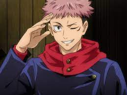
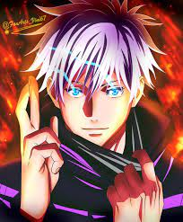
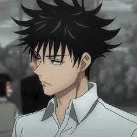

Historia
Yuuji Itadori é um estudante do ensino médio que vive em Sendai com seu avô. Ele evita regularmente a equipe de pista devido à sua aversão ao atletismo, apesar de seu talento inato para o esporte. Em vez disso, ele decide ingressar no Clube de Pesquisa Oculta, onde pode relaxar e sair com seus veteranos, e deixar a escola às 17h para visitar seu avô no hospital. Enquanto ele está no leito de morte, seu avô envia duas mensagens poderosas dentro de Yuuji - "sempre ajude as pessoas" e "morra cercado por uma multidão".
Após a morte de seu avô, Yuuji interpreta essas mensagens como uma afirmação - todo mundo merece "uma morte adequada", ele então é confrontado por Megumi Fushiguro, um xamã (Shaman) que o informa de um talismã de alto grau amaldiçoado em sua escola com o qual Yuuji recentemente entrou em contato. Seus amigos no Clube Oculto abriram o talismã, um dedo podre, que atraiu Maldições para a escola, criaturas provocadas por emoções negativas e fortalecidas pelo consumo de poderes mágicos presentes em xamãs ou em tais encantos. Incapaz de derrotar as Maldições devido à sua falta de poderes mágicos, Yuuji engole o dedo para proteger Megumi e seus amigos e se torna o anfitrião de Sukuna, uma poderosa Maldição.Cap. 1 Devido à natureza maligna de Sukuna, todos os xamãs devem exorcizá-lo imediatamente. No entanto, apesar de possuído, Yuuji ainda é capaz de manter o controle sobre seu corpo em sua maior parte. Vendo isso, Satoru Gojou, professor de Megumi, decide levá-lo ao Colégio Técnico Metropolitano de Tóquio para propor um plano a seus superiores - adiar a sentença de morte de Yuuji até que ele consuma todos os dedos de Sukuna, permitindo que eles o matem de uma vez por todas.
Personagens Principais
-
Yuji Itadori
 -
Satoru Gojo
 -
Megumi Fushiguro
 -
Ryomen Sukuna
Familia/Clã
Kamo
Kamo em primeiro lugar, que valorizam muito os laços de sangue e as técnicas herdadas. Aliás, essa família se destacou por uma história perversa, onde em alguma época remota, fizeram vários experimentos com humanos e espíritos amaldiçoados. Assim, se deu origem aos úteros amaldiçoados, inclusive vemos eles em ação na obra, onde nosso protagonista derrota um deles. Por outro lado, o atual herdeiro da família é o Noritoshi, que foi rejeitado no começo, mas por herdar a manipulação de sangue se tornou o novo herdeiro do clã.
Zenin
Uma família de certa forma tradicionalista, que valorizam as técnicas herdadas mais do que tudo. Inclusive, esse é o motivo de terem rejeitado a Maki, além de fazerem de tudo para que ela não cresça no mundo Jujutsu. Dessa forma, o antigo líder Naobito nunca teve uma boa relação com os Gojo, além de que após sua morte, o Megumi se tornou o novo líder. Assim, fica claro que o clã Zenin passa por uma conturbada fase, envolvendo brigas políticas e ideias diferentes, mas ainda são muito poderosos.
Gojo
Por fim temos a família Gojo que é formada atualmente por uma pessoa. Porém, esse único ser é o feiticeiro mais forte do mundo. Logo, Satoru herdou o poder dos Seis Olhos e com isso se tornou o homem mais poderoso de todos. Assim, ele consegue tomar ações egoístas e precipitadas sem nenhum problema, já que é o principal balanço entre as 3 famílias e também está no topo da hierarquia.